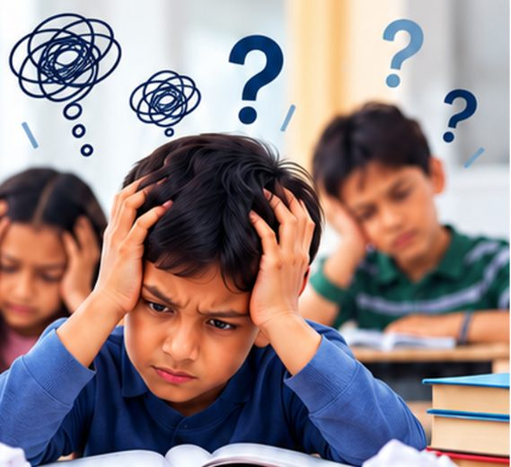

Free Calculation Efficiency Test: reel v2 storyboard
Built on the client's updated 7-slide script. One rule from the v2 brief: footage for feelings, motion for facts. Slides 1–3 (the problem) run on real footage under animated text; slides 4–7 (the offer) are motion graphics. Pacing is calmer than v1: one idea per shot, holds of 3–5 s, and only nine sound effects in the whole reel. Pictures marked "▶ stand-in" are brochure photos showing where a footage clip goes.
The hook
Footage
MATHS CONCEPTS ARE CLEAR…STILL MAKING SILLY MISTAKES?!- 1a: text rises in on "concepts clear" (0.6 s); lime tick draws on "hain".
- 2.9 s, on "phir bhi": soft cut, the paper slides up (0.5 s, spring). Red-pen marks land one by one, slower than v1: ✓, ✗, ✗, then the score circle.
- "silly" lands on "silly", "mistakes?!" on "mistakes". Hold still through the silent beat.
Visible warning signs
Footage
HAVE YOU NOTICED SIGNS LIKE THESE?Rushes through questionsMakes calculation mistakesHas trouble focusingKeeps forgetting formulas- Header in at 6.0 s, before the voice. Each line rises in and ticks on its spoken words: 6.3 "jaldi", 8.9 "calculation", 10.6 "focus", 12.4 "formulas".
- The full list holds still for the last 2 s.
Look beyond the signs
Footage
THESE MAY BE JUST THE VISIBLE SIGNS……not the real reasons behind those silly mistakes.- 3a: lines rise in on "dikhne wale signs"; the highlighter swipes across "signs…" (0.5 s).
- 18.4 s, on "Silly mistakes ke peeche": a slow 0.6 s cross-dissolve while the red tint fades in; "real reasons" lands on "asli wajah".
Introducing the test
Motion graphicsFREECALCULATION EFFICIENCY TESTUnderstand your child's calculation skills betterSpecially designed by Deveshh Sir · Guinness World Record Holder in Memory- 23.6 s: a soft circular wipe from the red slide into violet (the S3→S4 transition the brief asks for).
- "Calculation", "Efficiency", "Test" spring in on their words (27.1, 27.9, 28.6 s); the FREE badge drops in with a small tilt 0.3 s later.
- 29.6 s, on "taaki": the benefit lines rise in; the divider draws, then the emblem and "Deveshh Sir" settle at 31 s and hold.
Why? What next?
Motion graphicsMORE THAN JUST A SCORE!WHERE · mistakes are happeningWHY · the possible reasonsWHAT NEXT · where improvement should start- Headline holds alone for 1 s, then shrinks to the top line.
- WHERE springs in on "kahaan" (35.3 s), WHY on "reasons" (37.5 s), WHAT NEXT on "improvement" (39.6 s). Hold 2 s.
Special CTM™ bonus
Motion graphicsspecial bonusCTM™ 60-minute Masterclassworth ₹500with the test · limited periodEXPERIENCE CTM™ — CALCULATION THINKING METHODSee → Process → Answer- 42.6 s: a lime swipe in (the S5→S6 transition the brief asks for).
- Gift lid lifts on "bonus" (43.9 s), gently, no confetti burst. "₹500" counts up on "five hundred rupees" (47.6 s), then the stamp settles.
- 49.8 s, on "Experience": a cut to ink; "CTM™" springs in, "See → Process → Answer" writes itself on "different approach".
- 6b uses footage although it is a "facts" slide: the clip only sets the mood (a class in action), the dark tint keeps the type in charge.
Call to action
Motion graphicsBOOK YOUR CALCULATION EFFICIENCY TESTWhatsApp 80623 65298send CALCULATION EFFICIENCY TESTClass 3 onwards · Ahmedabad · VadodaraGiane Future Gurukull logo · www.gianefuturegurukull.comReply: registration form- The message types itself while the voice says "Calculation Efficiency Test likhkar"; send lands on "bhejiye". The reply arrives as a registration form card (client: the WhatsApp reply is a registration form).
- 57.6 s: the end card is centred; the number drops in digit by digit, the client's logo and website settle last, then everything holds still for 3.5 s for screenshots.
The new script runs about a minute
Read at a natural pace, the seven lines take about 52 s of speech, so the reel comes to about 61 s with the pauses and the end hold (66 s if the number is also read aloud). The Sarvam voice may be a little quicker. Decision: build A first (number not read aloud), then the tightened B from the same storyboard and footage.
| Option | Length | What changes |
|---|---|---|
| A. Script as written | ≈ 61 s | Nothing. Calm, clear, every point made. Fine for Reels; fewer people watch to the end of longer reels. |
| B. Tightened | ≈ 40 s | Same 7 slides and on-screen text; shorter lines: 1 "Maths के concepts clear हैं, फिर भी silly mistakes?" · 2 "जल्दबाज़ी, calculation mistakes, focus की problem, formulas भूल जाना…" · 3 "ये तो सिर्फ़ दिखने वाले signs हैं। असली वजह कुछ और हो सकती है।" · 4 "इसीलिए Giane Future Gurukull लाया है FREE Calculation Efficiency Test।" · 5 "जानिए mistakes कहाँ हो रही हैं, क्यों, और शुरुआत कहाँ से करें।" · 6 "Special bonus: CTM की sixty-minute masterclass, worth five hundred rupees!" · 7 "आज ही WhatsApp पर Calculation Efficiency Test लिखकर भेजिए।" |
| C. Both | 61 s + 40 s | Same storyboard and footage, two voice tracks: the long one for feed posts, the short one for paid ads. |
Clips used in v2
| Clip | Where | On screen | Grade |
|---|---|---|---|
| C1 | Slide 1a | 2.9 s | natural colour |
| C2 (opt.) | Slide 1b | 3.1 s | blur + darken |
| C3 | Slide 2 | 8.8 s | blur + darken |
| C4 | Slide 3a | 3.6 s | natural, bottom scrim |
| C5 | Slide 3b | 5.2 s | red duotone |
| C7 (opt.) | Slide 5 | 8.4 s | violet duotone |
| C8 (opt.) | Slide 6b | 4.2 s | dark ink tint |
C6 (teacher at the board) is no longer needed. Clips longer than 8 s (C3, C7) use a slowed take or two takes joined with a dissolve.
Nine effects in the whole reel
| Time | Effect |
|---|---|
| 2.9 | paper slide (exam paper) |
| 6.3–12.4 | 4 soft ticks (checklist) |
| 23.6 | whoosh (red → violet) |
| 27.9 | soft chime (test name) |
| 42.6 | whoosh (lime swipe) |
| 43.9 | soft pop (gift lid) |
| 55–57 | key taps + "sent" swoosh |
| 58.6 | chime (number complete) |
Real CC0 sounds (Kenney) and Mixkit free sounds are now in video/public/audio/sfx/. Music: piano-led, no drums in slides 1–3, lifts at slide 4, ducked under the voice, mixed to −14 LUFS.
Decisions
- Decided Length: version A first, then B.
- Open "Free" in the voice (slide 4)? Recommended.
- Decided Number not read aloud (on screen only).
- Open Footage: generate C1, C3, C4, C5 (and optionally C2, C7, C8) with the updated Veo prompts, then upload to
source/footage/. - Settled Hybrid rule · slides 4–7 motion only, no cartoon people · calmer pacing · fewer effects · facts from
video/facts.yaml.
What changed
- New 7-slide script (client's), Hinglish voice.
- Slides 1–3 on real footage; slides 4–7 motion graphics.
- 13 shots in ≈ 61 s (v1: 13 in 32 s), so each shot holds 3–5 s.
- "More practice" and "Parents, don't assume" are gone (not in the new script).
- 9 effects instead of about 45; no classroom murmur or pen scratches.